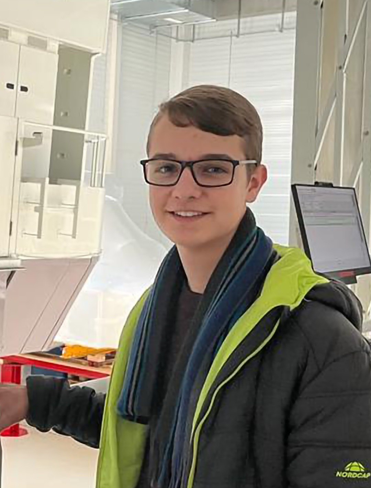

Steckbrief

| Vorname |
Lorin |
| Nachname |
Albrecht |
| Geburtsdatum |
21. Januar 2007 |
| Herkunft |
Schweiz |
| Adresse |
Kontakt |
| E-Mail |
Kontakt |
| Firma |
Buhler AG |
| Ausbildung |
Informatiker |
| Fachrichtung |
Applikationsentwicklung |
Meine Persönlichkeit
Ich bin Lorin und befinde mich in der Ausbildung zum Informatiker mit
der Fachrichtung Applikationsentwicklung bei der Firma Bühler AG in
Uzwil. Zur Zeit (Stand 2023) befinde ich mich im ersten von vier
Ausbildungsjahren. Ich interessiere mich für Technik aller Art, dabei
springt meine Leidenschaft besonders zu Computern und allem damit
verwandten. Für Hardware begeistere ich mich bereits seit mehreren
Jahren, während dem ich im beruflichen Umfeld besonders zur Software
Enticklung tendiere. Freizeitmässig faszinieren mich Flugzeuge aller
Art. Meine Hobbys sind Gitarre spielen und ich erstelle gerne
Fotografien.
Hobbys
- Gitarre spielen
- Fotografieren
- Flugsimulation